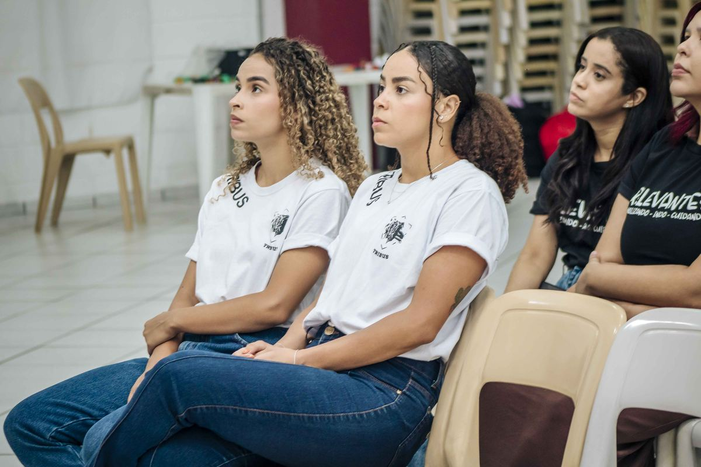
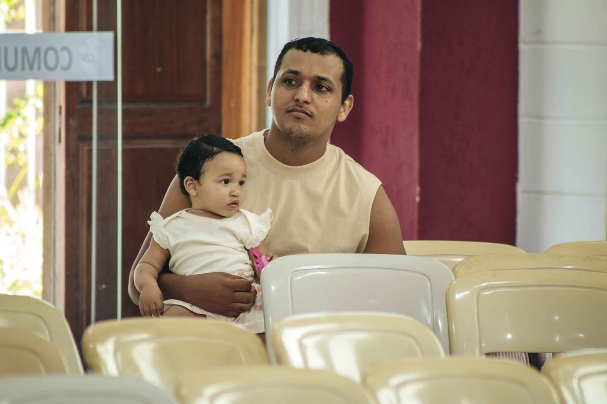
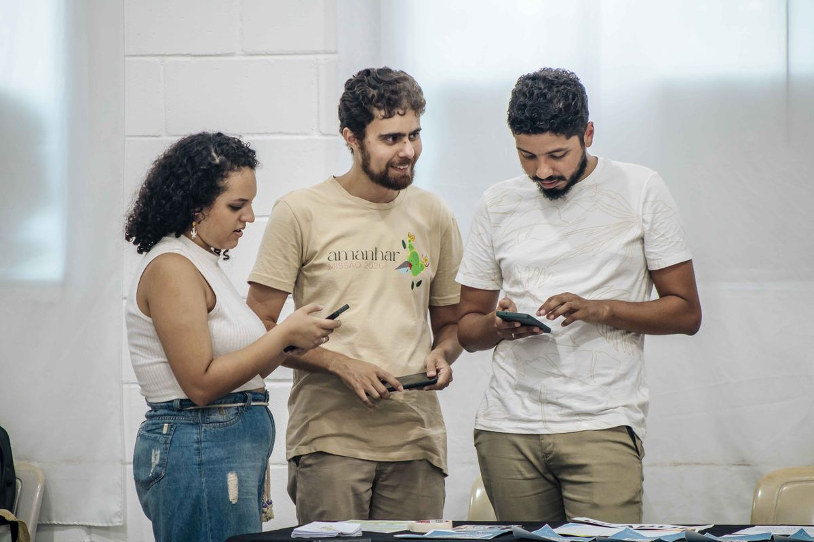
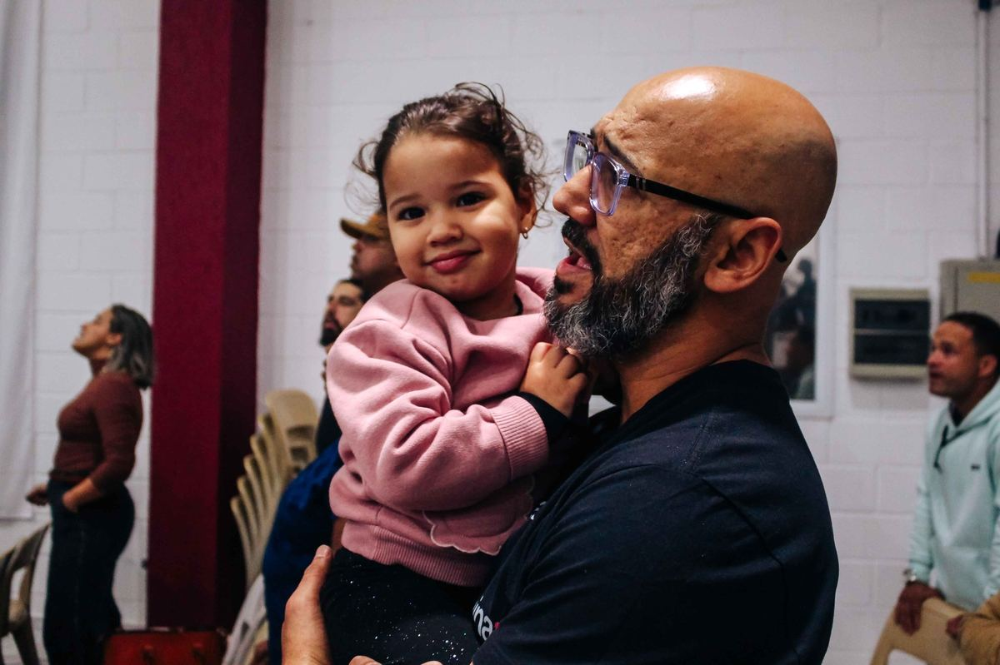

Cada ministério da CBP Sede é uma forma diferente de viver o mesmo propósito: adorar, ter comunhão, discipular, evangelizar e servir.

Ministério Jovem
Ministério Infantil
Missões
FamíliasCélulas não são um ministério entre outros: são o tecido que sustenta toda a igreja. Reunidas de terça a sexta, em casas por toda a cidade, são onde a fé é vivida de perto, em comunhão e evangelismo.
Conduz a igreja em adoração aberta e livre, celebrando a presença de Deus a cada culto.
O grupo "Sal e Luz" usa a dramatização para comunicar o evangelho de forma criativa e acessível.
Adoração em movimento, levando louvor e mensagem através da dança.
Reúne os jovens da igreja aos sábados, às 19h30, no Aviva Jovem, para crescerem juntos na fé.
Cuida das crianças da igreja com carinho e ensino bíblico apropriado para cada idade.
Fortalece os casamentos à luz da Palavra de Deus, com encontros e aconselhamento.
Reúne os homens da igreja quinzenalmente, às quartas-feiras, às 20h, para comunhão e crescimento.
A primeira impressão de quem chega. Acolhe cada visitante com um sorriso e um lugar reservado.
Leva a igreja para fora dos próprios muros, servindo e evangelizando a cidade de São Vicente.
A Escola Bíblica Ministerial aprofunda o conhecimento da Palavra e forma novos líderes.
Retiro espiritual da igreja, para homens e mulheres, um tempo à parte para renovar o compromisso pessoal com Cristo.
Nosso braço missionário no sertão de Pernambuco, levando o evangelho a quem ainda não o conhece.
Fale com a nossa Recepção no próximo culto, ou entre em contato pelo WhatsApp.
Falar no WhatsApp